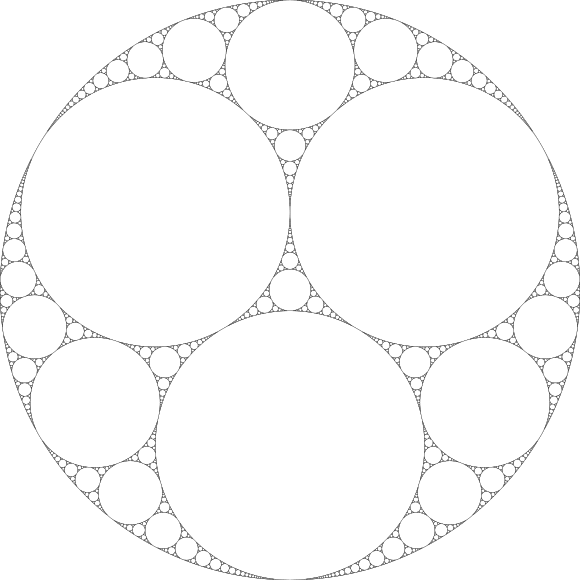
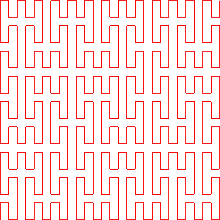
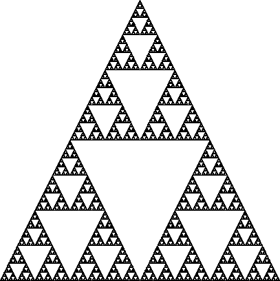
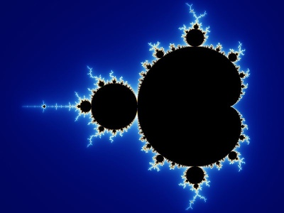
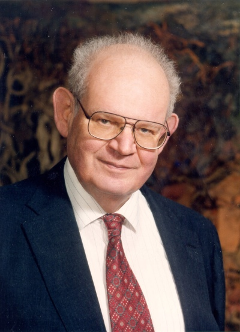
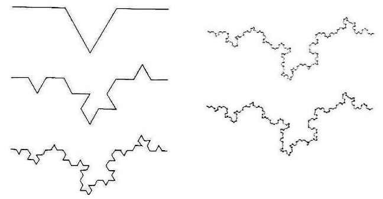

I - La théorie des fractales
Introduction
Nous verrons dans cette première partie, l'histoire des fractales, de la première trace à nos jours. Puis nous expliquerons que désigne le terme fractale. Et enfin, nous verrons le rapport des fractales à la nature.
A) Historique
Les premières traces de fractales datent de 300 avant JC. Il s'agit de la « Baderne d'Appolonius » qui est le plus vieil exemple de fractale :
Baderne d'Appolonius
Créé par Apollonius de Perge, c'est lui aussi qui introduisit les termes d'ellipse, de parabole et d'hyperbole.
Durant le XIXè et le début du XXè siècle, des mathématiciens comme Cantor, Peano, Von Koch, Hausdorff ont créé ce qu'on appelle des « monstres mathématiques ». Ces monstres remettent en cause beaucoup dénoncés admis jusque là sans démonstration. Pour exemple, ils ont créé des courbes continues ne possédant de tangentes en aucun point.
Mais les fractales sont délaissés par la suite et sont considéraient comme des aberrations qui ne mènent à rien.
Quelques exemples :
Courbe de Peano |
Tapis de Sierpinski |
Fractale de Julia |
Benoit Mandelbrot fut le premier mathématicien à utiliser le terme 'fractale' en 1975 lors de la sortie de son livre The fractal geometry of Nature :
Benoit Mandelbrot
C'est notamment grâce à lui et les travaux initiés par Fatou et Julia, que les recherches sur les fractales ont repris. Il est aussi l'un des premiers à avoir fait le rapprochement entre la géométrie fractale et la nature. Il est mort récemment (2010).
B) Qu'est-ce qu'un objet fractale ?
Il est difficile de définir le terme exacte de 'fractale'. Nous allons donc citer la définition qu'à donner son créateur Mandelbrot pour son livre :
« objet fractal » et « fractale », termes que je viens de former, pour les besoins de ce livre, à partir de l'adjectif latin fractus, qui signifie « irrégulier ou brisé ». Fractale. n.f. Configuration fractale. Ensemble ou objet fractal.
NB : fractale avec un -e signifie que l'on parle du nom commun tandis que sans, il s'agit de son adjectif.
Nous connaissons tous la géométrie Euclidienne avec ses droites, rectangles et cubes. Nous l'utilisons pour définir des objets de la nature. Ainsi, un tronc d'arbre ressemble à un cylindre, une orange à une sphère. Mais la géométrie Euclidienne connaît ses limites quand on essaye de définir des formes plus complexes comme des montagnes, des nuages, ou même des choux-fleurs... C'est là que la géométrie fractale intervient.
De plus le géométrie fractale possède une propriété d'auto-similarité : chaque portion d'une fractale reproduit la forme générale, quelque soit le grossissement quand celle-ci est régulière. Elle peut être aussi statistique quand nous observons une similitude approchée mais pas exact, à différentes échelles.
Afin d'illustrer la définition de Mandelbrot, nous pouvons prendre comme exemple les poussières de Cantor :
Poussières de Cantor
A partir de l'itération I0, c'est à dire le segment entier en haut de la figure, Georg Cantor (1845-1918) a soustrait le tiers centrale de ce segment (I1). Ainsi de suite de I1 à I2, où le tiers des deux nouveaux segments ont disparu à leur tour. Ainsi, cette figure a subi 6 itérations. Il est difficile de faire plus à cause de la résolution, mais ce phénomène peut se répéter à l'infini jusqu'à l'état de « poussière ». De cette même façon, nous pouvons dire que, si I0 appartient à l'ensemble de définition [0;1] alors I1=[0;1/3]U[2/3;1] et que I2=[0;1/9]U[2/9;1/3]U[2/3;7/9]U[8/9;1], comme I3 jusqu'à l'infini, donnant des ensembles de définitions de plus en plus complexes mais toujours compris entre 0 et 1.
Afin de faciliter le calcul nous allons choisir une fractale aux propriétés d'auto-similarité régulière : le flocon de Koch.
Flocon de Koch

Le principe de cette fractale est de supprimer un tiers d'un côté et de le remplacer par 2 côtés d'un triangle équilatéral de côté égal au tiers supprimé. Ainsi si la droite initiale est égale à 1, que l'on supprime un tiers (il reste deux tiers) et que l'on ajoute 2x un tiers (les 2 côtés du triangle équilatéral), on obtient un périmètre de 4/3 supérieur à celui de départ : 1-1/3+2*(1/3) = 4/3, soit un agrandissement de 4/3.
D'une façon générale, à partir d'un triangle, nous avons au bout de n itérations :Un étant le nombre de côté : Un = 3*4nLn étant la longueur d'un côté : Ln = (1/3)nPn est le périmètre en fonction de Un et Ln : Un*Ln = (3*4n)(1/3n)
C) Dans la réalité
Dans l'univers des fractales, nous avons une notion d'universalité. Cette universalité se retrouve dans la nature. En effet nous retrouvons des objets naturels aux formes universelles, où seuls les détails dû au hasard, permettent de rendre cet objet unique. Par exemple, la forme générale des arbres est dite universelle mais les détails de ces derniers nous permettent de les différencier.
Contrairement aux fractales issues des mathématiques purs possédant une auto-similarité exacte, les fractales naturelles ont une propriété d'auto-similarité statistique. Cette propriété est du au hasard.
Les objets naturels sont issus de phénomènes très complexes que l'on appelle plus communément le hasard. Ces phénomènes sont très diverses. Il peut s'agir pour exemple du climat, du milieu naturel et d'autres détails très infime que nos technologies ne sont pas capables de contrôler. C'est grâce au hasard que nous pouvons différencier un objet naturel d'un objet tiré des mathématiques purs.
Nous pouvons donc essayer d'introduire le hasard dans une figure fractale que l'on connaît : le flocon de Koch.
Flocon de Koch compilé au hasard
Grâce au hasard associé à cette fractale, nous pouvons maintenant la comparer à une côte rocheuse. Ceci prouve que le hasard joue un grand rôle dans la formation de la nature.
Conclusion
A travers ces parties, nous avons vu que les premières traces de fractales sont très anciennes. Avec le temps et l'informatisation, cette géométrie est devenue une nouvelle dimension pour les mathématiciens comme Mandelbrot. En effet, grâce à l'informatique, nous avons vu que les formes fractales ressemblaient étrangement à des éléments naturels (Flocon de Koch, Tapis de Sierpinski...).
Nous verrons par la suite des exemples concrets de fractales présentent sous formes naturelles, où nous retrouverons la propriété d'autosimilarité et la présence du hasard.